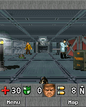

DOOM RPG came with an optional eight-site texture patch. We found a route where the original module could load its own textures and produce the same gameplay pixels without using it.DR01
The same picture from the original.
The retained route executed the original ARM module through its title and opening corridor. Correct host services made the optional patched candidate unnecessary on that route, while removing about 9.96 million cold-loader instructions. The patch stayed a separately preserved option, not a requirement silently folded into the original.DR01

The original DOOM RPG opening corridor,NPCs and HUD, retained from the historical desktop original-engine acceptance.176×220;not phone output.
Open the image for the full original view.
DR90We found a small drawing detail in the automap. A rectangle with RGB_NONE and fill flag 2 meant fill with the configured background. Our host had skipped it because the call supplied no explicit color. We needed to follow what that combination requested to get the original map background back.DR02
The game loops the music.
The audio player initially ignored newly exposed native PAUSE and RESUME commands. Its own pause state had to remain distinct from Android backgrounding, including the case where preparation finished after a pause.DR04
Completion was not simply “repeat this media file forever.” The original game’s callback could issue the next PLAY. That callback expected the media object in two notification fields, and the old player needed removing before the callback created a replacement. Keeping the original play serial also prevented a late callback from targeting a recycled object.DR04DR05DR06
We had a retained host route through the opening scene, map and original saved Continue flow. My phone feedback was encouraging too, with another visible problem attached: Android’s system bars overlapped the game. The next job was around the picture we’d recovered.DR03DR07DR08
About these records
The patch comparison and opening-world/save evidence are historical host execution of a stated route, not whole-game equivalence. The early phone report and owner feedback are separate from the revised-layout checks. Sparse battery readings do not establish thermal performance. The image is historical desktop original-runtime output. Original game packages and optional patch binaries are not distributed with this archive.
The receipts
Selected report lines, investigation notes and recorded feedback. Each receipt keeps its original source and scope.
DR01 / The optional texture patch turned out to be unnecessaryCheckpoint investigation notes
Source: 13-Doom_RPG_Bridge_v0.1.1_PRIVATE_CHECKPOINT.zip / Doom_RPG_Bridge_v0.1.1_PRIVATE/evidence/acceptance/runtime-verification.txt · selected lines 1–9
Doom RPG Bridge v0.1.0 runtime acceptance — 2026-10-10 The original ARM module is executed, not recreated. Native class0x01035893; 176x220 guest framebuffer; original shell timer requests15ms. Native game assets and module come from the uploaded archive. No eight-site texture patch is needed: original module loaded textures and produced the same gameplay pixels as the device-patched candidate, while removing about9.96million cold loader instructions from the scripted route. Source documentation retains the bundled optional patch separately.
DR90 / Historical image / The original DOOM RPG opening corridorHistorical host capture
Source: Doom_RPG_Bridge_v0.1.1_PRIVATE/evidence/acceptance/opening-3d.png
Original game pixels retained from the stated historical host check. No physical-phone capture is implied.
Unchanged historical image. Source member: Doom_RPG_Bridge_v0.1.1_PRIVATE/evidence/acceptance/opening-3d.png SHA-256: 43e27c94f2bf5a8e509489e8ed60e0ed0cf76d7bca14b2e292e32fe22e12085e The original DOOM RPG opening corridor,NPCs and HUD, retained from the historical desktop original-engine acceptance.176×220;not phone output. Scope: Historical desktop original-runtime framebuffer; not phone output. Visually inspected, game only, no personal UI.
DR02 / The automap needed its original background fillCheckpoint investigation notes
Source: 13-Doom_RPG_Bridge_v0.1.1_PRIVATE_CHECKPOINT.zip / Doom_RPG_Bridge_v0.1.1_PRIVATE/evidence/acceptance/runtime-verification.txt · selected lines 25–31, 39–42
Compatibility work extends the BREW/CPU bridge: native UTF16 BARstrings, string conversions/printf, memory sources+gzip streams, correct CreateDIB ABI (depth,width,height), packed palettes/pitch, bitmap blits, IGraphics primitives/clips/default backgrounds and native IMediaCMID commands and notifications. It does not replace original game logic. IDisplay.DrawRect RGB_NONE with fillflag2 uses the original configured background rather than skipping the fill; this was necessary for real automap drawing. [... selected excerpt ...] Independent static review confirmed original automap at MOD0x864C starts with DrawRect(RGB_NONE,RGB_NONE,flags2). Explored floors/walls depend on original tile flags; small red explored area/yellow marker at this tutorial position agrees with the original branch conditions and colors.
DR04 / Original audio pause commands were initially ignoredCheckpoint investigation notes
Source: 13-Doom_RPG_Bridge_v0.1.1_PRIVATE_CHECKPOINT.zip / Doom_RPG_Bridge_v0.1.1_PRIVATE/evidence/intake/android-integration-review.txt · selected lines 9–12
Audio material finding: new native PAUSE/RESUME event kinds were initially ignored by the controller. Root corrected with per-player originalPaused state and start gating. Re-reviewed the corrected flow: separate Android lifecycle and original game pause gates; original PLAY serial retained for notifications; delayed preparation and replaced MediaPlayer callbacks checked by player identity; completion removes the old player before native callback can schedule a replacement. Audio source lookup supports exact payload SHA-256 .wav and .mid assets and packaging stores these uncompressed for openFd. No remaining material controller/MainActivity mismatch identified by this review. Physical Android MediaPlayer, touchscreen, and lifecycle behavior requires device execution; this review does not claim that environment was tested.
DR05 / Music finishes by asking the original game to loopCheckpoint investigation notes
Source: 13-Doom_RPG_Bridge_v0.1.1_PRIVATE_CHECKPOINT.zip / Doom_RPG_Bridge_v0.1.1_PRIVATE/TECHNICAL_HANDOFF.txt · selected lines 18
Audio conversion assets are indexed by SHA256 of the exact CMID bytes emitted by the guest, without the 28-byte BAR MIME header. Store those assets uncompressed in the APK for openFd. MediaPlayer retains independent objects and honors PLAY/STOP/PAUSE/RESUME. Callbacks preserve the original PLAY serial; the native Doom callback requires the media object in both notification fields +0 and +4.
DR06 / The native completion callback issues another PLAYHistorical host regression output
Source: 13-Doom_RPG_Bridge_v0.1.1_PRIVATE_CHECKPOINT.zip / Doom_RPG_Bridge_v0.1.1_PRIVATE/evidence/acceptance/quiet-and-audio.txt · selected lines 1–4
PASS: 32 actual-host-clock callbacks at requested15ms (wall=536ms); detailsOFF; no TRAP/timertrace collection; fullreports absent fromroutineframes; nonblackpixels notcounted; presentationrevision monotonic; changed=1, unchanged=31. PASS: accessibilitytap(...,0) dispatches press+release without pumping native timer. This JVM check is bounded and does not measure S25Ultra heat or prove laterlevels. PASS: native title CMID resource=5040, bytes=14206; measured-host completion status2 re-enters original guest notification and emits a new PLAY for looping song.
DR03 / The real opening corridor and save ContinueCheckpoint investigation notes
Source: 13-Doom_RPG_Bridge_v0.1.1_PRIVATE_CHECKPOINT.zip / Doom_RPG_Bridge_v0.1.1_PRIVATE/evidence/acceptance/runtime-verification.txt · selected lines 11–23
PASS — original JAMDAT splash, Doom RPG sound prompt/mainmenu, New Game, original story/cinematic and real first-person corridor with NPCs/HUD. PASS — native arrow forward/back and left/right turning. Numeric1/3 strafe; 7 and* accepted as weapon controls;5 delivered to the native action handler and displays its “Nothing to use” response at the starting position. PASS — # opens original automap with explored tile/player marker and can exit; 0 opens original Game Menu. Map screen clears the previous3D background. PASS — original Save Game writes extensionless config17B, world8037B, player122B and player2119B. These files were exported, then supplied to a new session. Native Continue appeared and loaded the first3D area/HUD again. PASS — ordinary run detailsOFF, no unsupported interface/service signatures observed across this route, no routine trace collection. Separate real-clock quiet/immutable-frame and original audio loop callback checks passed.
DR07 / The phone felt good but Android bars overlappedCheckpoint investigation notes
Source: 13-Doom_RPG_Bridge_v0.1.1_PRIVATE_CHECKPOINT.zip / Doom_RPG_Bridge_v0.1.1_PRIVATE/evidence/layout-v011.txt · selected lines 3–5, 11–13
Implemented dynamic system-bar and display-cutout padding, preserving original base padding across repeated dispatches. Typed Android API30+ path and legacy API26-29 path compile against Android35. System bars stay visible; framebuffer remains aspect-fit. No runtime, payload, audio conversion, save logic, input mapping or scheduling changes. PASS: original-engine host tests rerun, including immediate press/release, quiet immutable frames, opening gameplay, movement, automap and save/Continue. [... selected excerpt ...] Phone evidence supplied for v0.1.0: system bars overlap header and bottom controls; report shows no host/CPU/live/save/audio errors. Six battery samples 36.1 C; Android thermal status0. User reports good game feel. Limit: no physical-phone observation of v0.1.1 layout yet. No phone FPS or sustained thermal claim.
DR08 / Physical report and revised layout have separate scopesCheckpoint investigation notes
Source: 13-Doom_RPG_Bridge_v0.1.1_PRIVATE_CHECKPOINT.zip / Doom_RPG_Bridge_v0.1.1_PRIVATE/VERIFICATION.txt · selected lines 9–11, 15–17
All 95 original CMID audio resources have playback conversions: 92 QCELP effects to PCM WAV and three original musical scores to Standard MIDI. Duplicate resources share 83 hash-keyed files. PCM sample counts were verified, and Java independently parsed all three MIDI tracks. Android supplies MIDI instrument synthesis. The v0.1.0 phone report records nine Android audio starts and zero audio errors. Native music completion callbacks re-enter the original game and issue its loop request. Detailed diagnostics are off for ordinary play. Bounded host checks verified real-clock timer dispatch, immediate press/release handling, immutable changed-frame publication and absent routine full traces. These checks are not phone FPS or heat measurements. [... selected excerpt ...] Test scope: opening gameplay, original save/reload and exercised native services. Enemy combat, later levels and complete game progression have not been verified here. The user reports good game feel on the S25 Ultra; the v0.1.0 report shows no host/runtime/save/audio errors, six battery readings of 36.1 C and thermal status 0. Those sparse readings are not sustained-performance measurements. v0.1.1 layout: dynamically applies Android system-bar and display-cutout insets to the outer layout, preserves fixed base padding without accumulation, and keeps original framebuffer aspect-fit scaling. API 30+ uses native typed insets; API 26-29 uses legacy system insets with API 28+ cutout maxima. System bars remain visible. Original-engine host checks were rerun successfully. APK versionCode 2, matching application ID and signing certificate, byte-identical original payloads/audio and alignment were verified. The updated layout has not yet been observed on the physical phone.